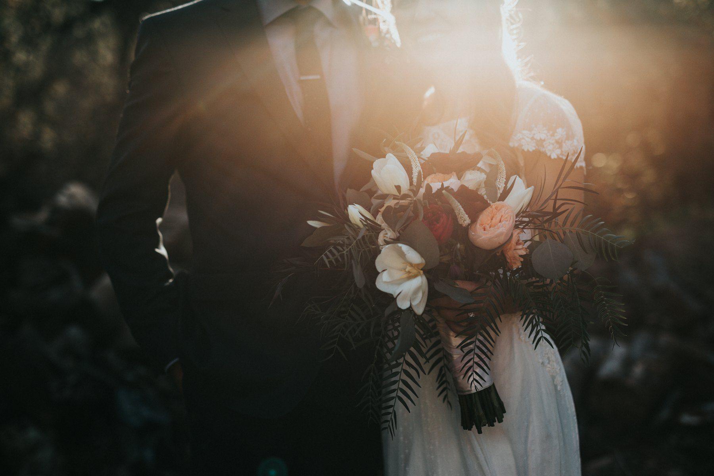
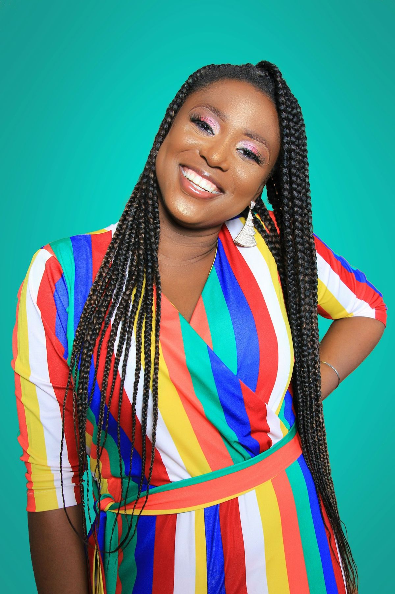
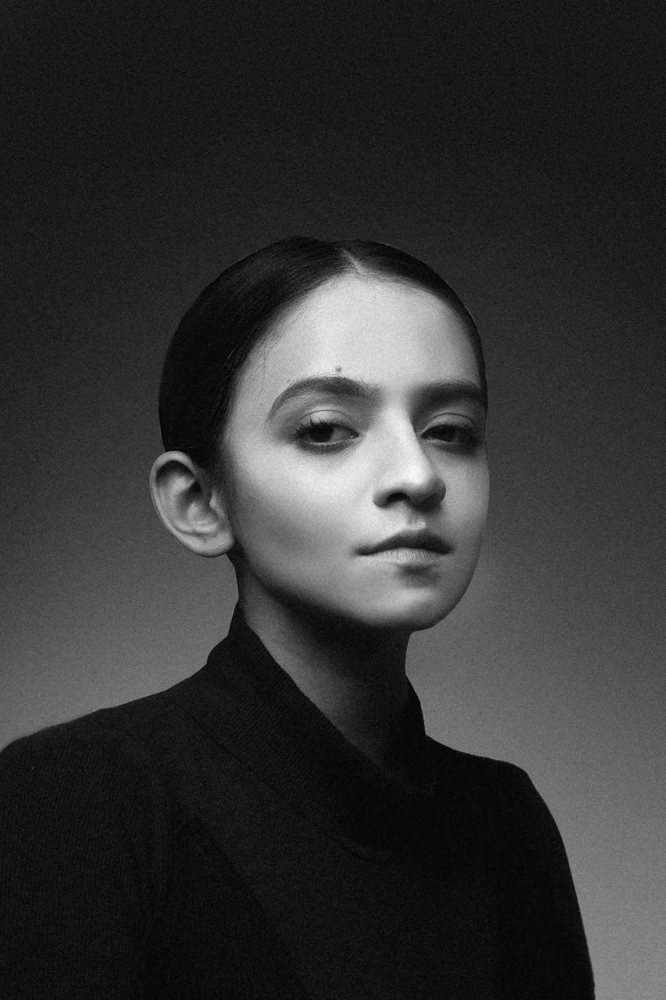

Примеры сайтов
Примеры сайтов, которые я делаю для фотографов, тренеров и экспертов. Откройте и полистайте, всё работает на телефоне.

Свадебный фотограф и видеограф
Кинематографичный стиль, портфолио, блок свадебного фильма, тарифы и календарь свободных дат.
Открыть пример →
Портретный фотограф
Яркий стиль, форматы съёмок, портфолио с фильтрами и онлайн-калькулятор стоимости.
Открыть пример →
Fashion-фотограф · журнал
Сайт как глянцевый журнал: обложка, содержание, съёмки-развороты с кредитами и прайс-лист.
Открыть пример →
Портрет · чёрно-белый минимализм
Строгий тёмный сайт: серии с превью при наведении, листаемая плёнка кадров, лаконичный прайс.
Открыть пример →
Фитнес-тренер для девушек
Тёплый светлый стиль: онлайн и зал, тарифы с переключателем, слайдер «до и после», запись на пробную.
Открыть пример →